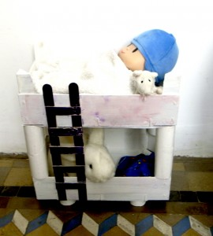

Start›Blog›Aktivität›PuppenbettAktivität · SpielenPuppenbett7. Januar 2012 . Puppenbett: Pocoyo hat die heutige Nacht in seinem neuen Bett verbracht. Zwei bemalte Fruchtkisten und vier Küchenrollen. Schlagwörter: recyceln← WassermühleNuss Rassel →